Query Builder is a user-friendly visualization tool that will help you make sense of your complex database designs. It can be useful when you need to understand the various relationships between different tables. Also, it can be helpful for those who is not much familiar with SQL scripting or if you don't want to insert script commands manually. The tool creates SQL scripts automatically based on visual schema you create.
Note: Visual Query Builder presents only in DBeaver [[Enterprise Edition]]
Opening Visual Query Builder
To open Visual Query Builder click the Open Query Builder button in the SQL Editor tool bar. The Visual Query Builder will appear on the right.

Creating Visual Query
Start creating a query from selecting query data source: drag-and-drop tables you want to work with from the Database Navigator pane into the Visual Query Builder area. All the connections existing between the tables will be shown automatically.
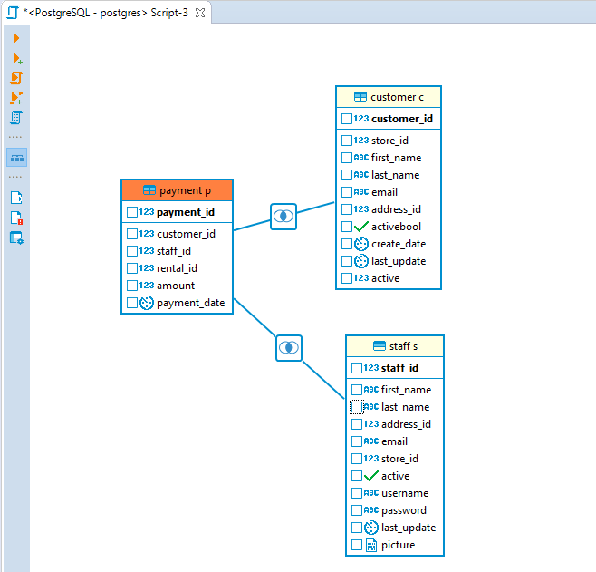
To create a new join between the tables press the left mouse button when the cursor is over the column of one table, holding the right mouse button pressed drag the cursor to the column of another table and release the right mouse button. The connection between the selected columns of the tables will be created visually and in the SQL script a new join will be added.
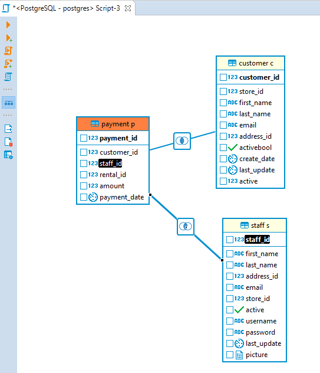
To remove a join between the tables click on it. The connection will be highlighted. Then, pressDelete or use the Delete option in the context menu. The visual connection will be removed and the corresponding join will be automatically removed from the SQL script area.
To build a SELECT query you need to select columns in the tables you added. To select a column click the check-box next to its name - the column will be added to the Columns tab of the Query Settings Editor and SELECT query will be added to the SQL script area automatically.
Adjusting Query Settings
Visual Query Builder also allows setting query conditions and adjust representation of query results by means of Query Settings Editor.
To open Query Settings Editor use Visual builder query settings button in the vertical tool bar on the left.
Query Settings window contains five tabs described below.
Columns
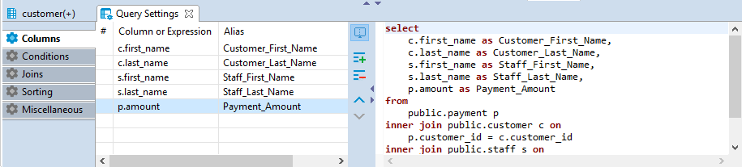
Columns tab of the Query Settings Editor contains all the columns you added by selecting column names in Visual Builder main window. In this tab you can add and remove columns using Add and Remove buttons correspondingly.
To add a column, press Add button and a new instance will be added to the table. Click on the first cell in Column or Expression column and select a column from the list of available columns displayed in the dropdown list appeared.
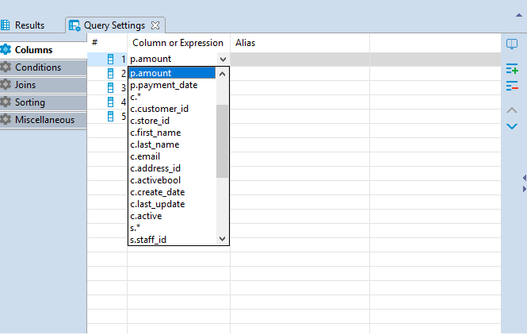
To remove a column, click on the row containing its name and press the Remove button on the right.
To change the display order of columns in the result table use Move Up/Down buttons .
You can also define a user-friendly name of the column to be displayed in the result table. To set a user-friendly name click on a cell in Alias column and insert the name. The change will be immediately displayed in the SQL script area.
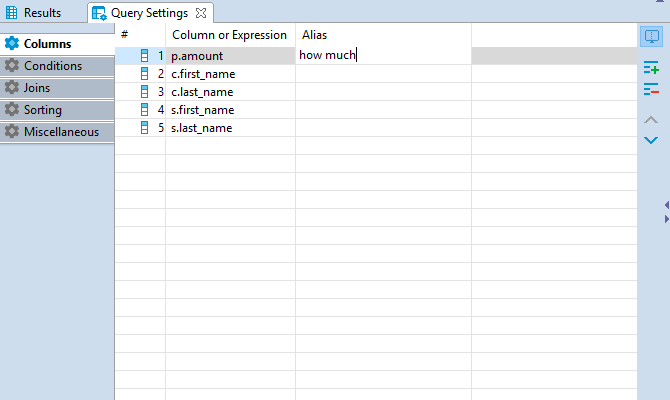
Conditions
Conditions tab is used for managing query conditional expressions.
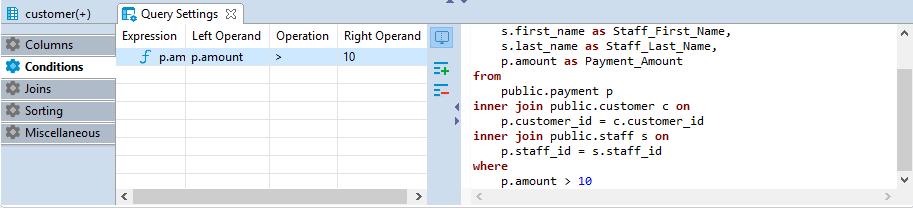
To add a new conditional expression use the Add button on the right - a new instance will be added and the default conditional expression WHERE will be added to the SQL script area automatically. This default conditional expression can be then adjusted to the one you need:
- Left Operand setting defines the left operand of the conditional expression. To set the left operand, click the cell in the Left Operand column and a drop down list of all available columns will be displayed. Select a column you want to use as the left operand in your conditional expression or insert a digit.
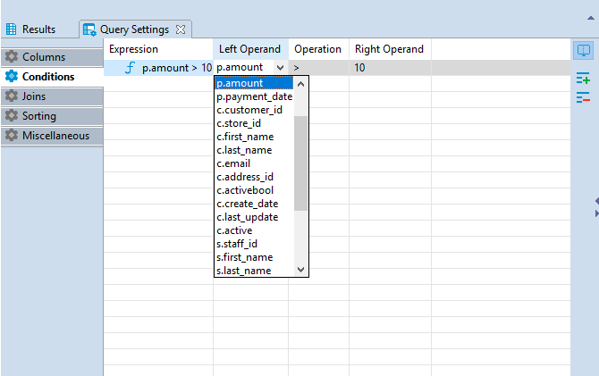
- Operation setting defines the comparison rule between the left and the right operands of the conditional expression. To set a comparison rule, click the cell in the Operation column and select the rule you need from the drop down list appeared.
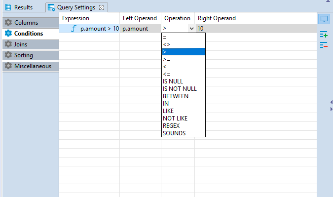
- Right Operand setting defines the right operand of the conditional expression. To set the right operand, click the cell in the Right Operand column and a drop down list of all available columns will be displayed. Select a column you want to use as the left operand in your conditional expression or insert a digit.
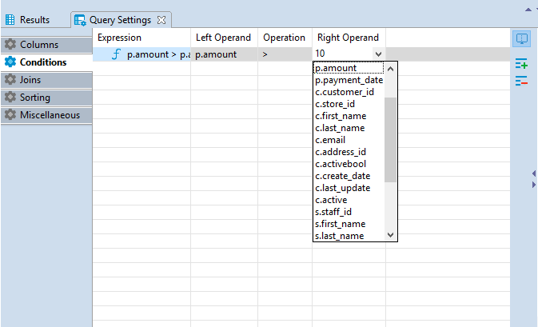
To remove a conditional expression, click on the row containing the expression and press the Remove button on the right.
Joins
All the joins existing between the tables in Visual Query Builder main window are displayed in the Joins tab of Query Settings Editor.
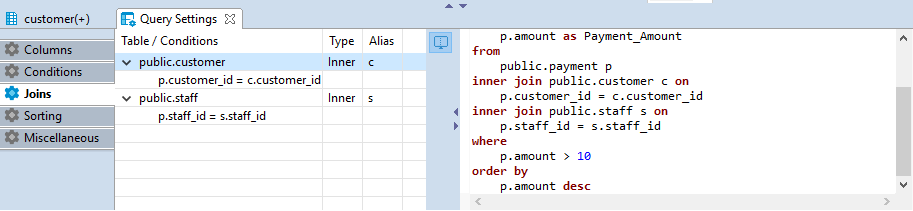
Joins cannot be added or removed by means of Query Settings Editor, however, the following join settings can be adjusted here:
- Type - defines the type of the join. Click the cell in the Type column - a drop down with available join types will be displayed. Select the required option from the list by clicking on it.
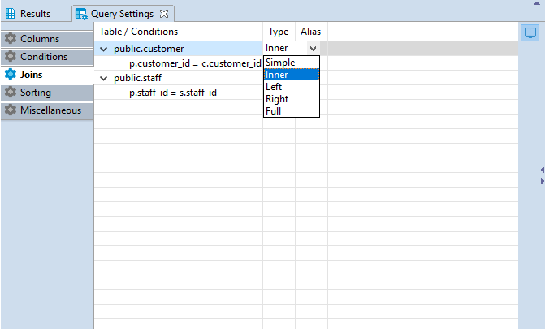
- Alias - defines a user friendly name of the join. To define this setting click on the cell in Alias column and input the name.
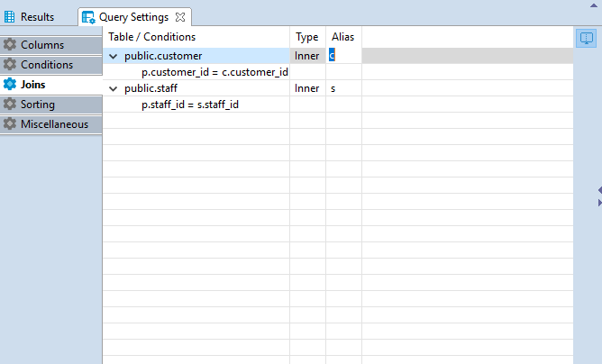
Sorting
In Sorting tab you can set the order of rows in the result table.
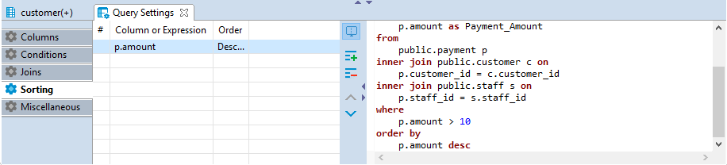
To add a new sorting condition press the Add button on the right and the default conditional expression ORDER BY will be added to the SQL script area automatically. This default conditional expression can be then adjusted to the one you need:
- Once a new condition is added, click the first cell in Conditions or Expressions column and a drop down list of all available columns will appear. Select the required column by clicking on its name.
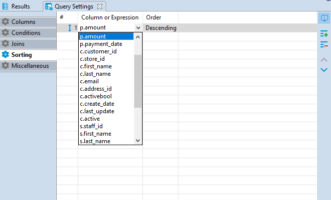
- In Order column you can define whether the rows of the selected column should be sorted in ascending or descending order in the result table. To set the order, click the cell in Order column and select the required option from.The order by command will be added to the script.
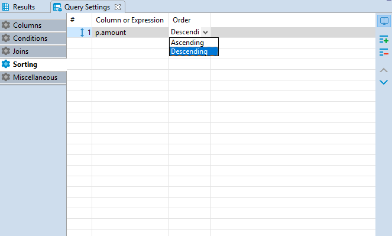
To remove a condition use the Remove button on the right.
Miscellaneous
In Miscellaneous tab it is possible to autosave on SQL-editor switch by selecting the Autosave on SQL-editor switch check-box.
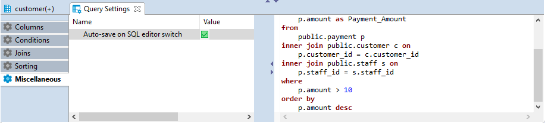
Executing Visual Query
To execute a query, use Execute SQL statement button to get the results in the same tab or Execute SQL statement in new tab button to get the results in a new tab. Both buttons are located in the Visual Query Builder vertical toolbar.